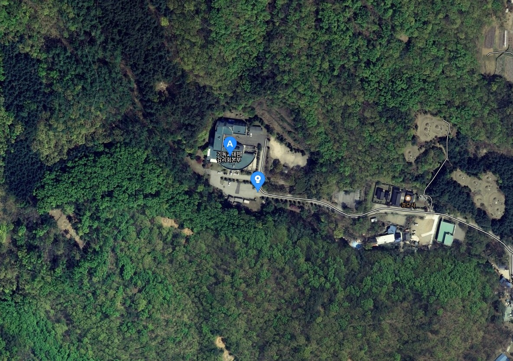
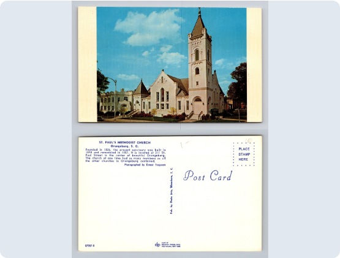
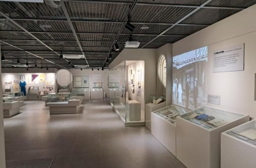
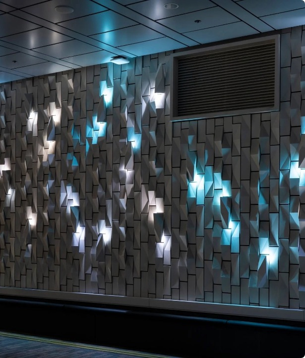
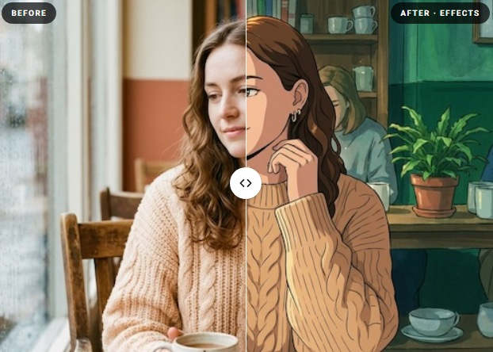
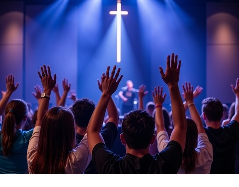
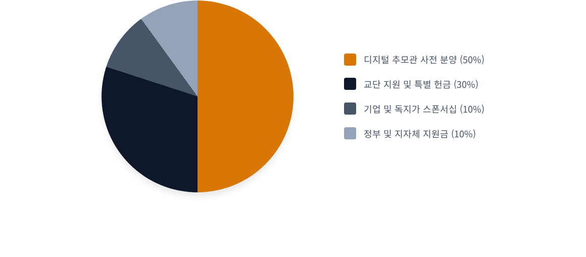
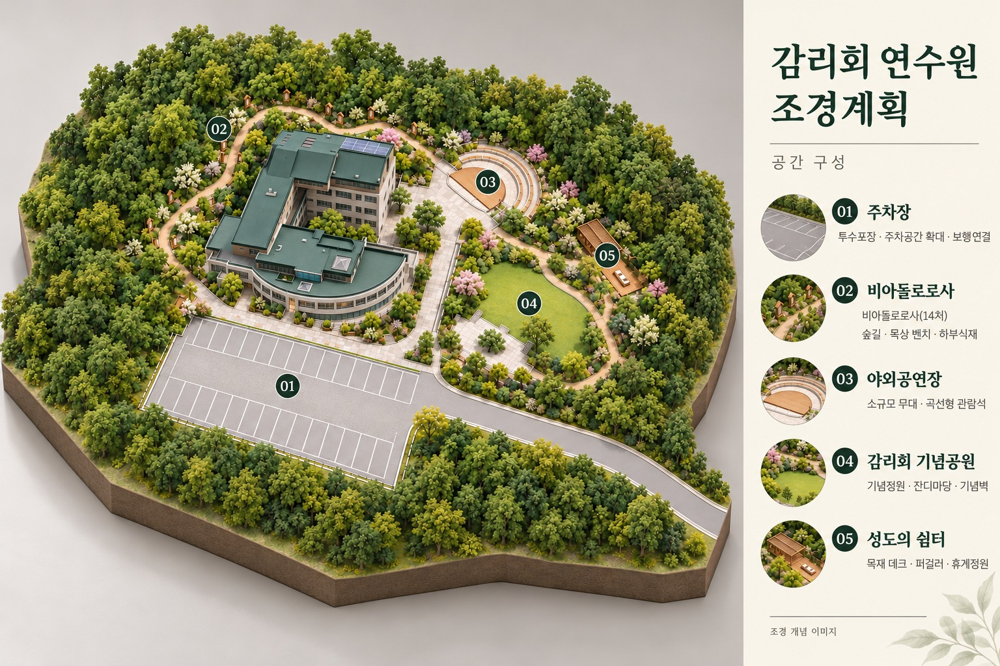

ORIGINAL CONTENT · 01 / 18들어가면서 · 일영시대 복합 영성 프로젝트
≪감리교 역사박물관에 감리교인 디지털추모관을 만들고 싶은데 AI 생각은 ?≫
ａ감리교 역사박물관에 일반 감리교인들을 위한 디지털 추모관을 만드는 것은 교단 역사학적으로나
목회적으로 엄청난 가치를 지닌 혁신적인 아이디어입니다.
ａ기존 박물관이 '위인이나 선교사' 중심이었다면, 이 기획은 '평범한 성도들의 삶과 신앙’을
교단 역사의 주인공으로 격상시키는 깊은 의미가 있습니다.
≪일반 성도 대상 추모관의 독보적인 장점≫
►살아있는 역사 아카이브: 유명 인물 뿐만 아니라 평생 교회를 섬긴 무명 성도들의
신앙 유산을 기록하여, 감리교의 진짜 뿌리를 보존할 수 있습니다.
►평신도 중심의 자부심 고취: "우리 할머니, 우리 어머니의 신앙"이 박물관에
기록된다는 점에서 감리교인들에게 엄청난 소속감과 자부심을 줍니다.
►유가족의 지속적인 방문 유도: 일회성 방문에 그치던 박물관을 '조상의 신앙을
기억하기 위해 언제든 다시 찾는 공간'으로 탈바꿈 시킵니다.
들어가면서⟹
일영시대 복합 영성 Project
출처: 한국 감리교 헤리티지 센터 건립 사업계획서_01.pptx · 1쪽
텍스트와 주요 이미지를 웹 읽기 형식으로 옮겼습니다. 원본 슬라이드의 배치는 PPT 파일에서 확인할 수 있습니다.
ORIGINAL CONTENT · 02 / 18일영연수원 부지 가치 및 입지
일영연수원 부지 가치 및 입지
본부 일영 시대와의 시너지: 감리회 본부 이전에 따른 행정·상징적 중심지
로서의 가치 극대화
뛰어난 자연 환경: 수도권 근교의 쾌적한 자연 속에서 역사 탐방, 묵상, 휴양
이 결합된 환경 제공
유휴 공간의 효율적 재창출: 기존 연수원 수련 시설과 연계하여 지속 방문
가능한 공간 모델 정립
전국 단위 접근성: 전국 교회 및 단체 수련회, 가족 단위 성도 방문 유치 용이

일영연수원 부지 항공 이미지 · 이미지를 누르면 원본 크기로 열립니다.출처: 한국 감리교 헤리티지 센터 건립 사업계획서_01.pptx · 2쪽
텍스트와 주요 이미지를 웹 읽기 형식으로 옮겼습니다. 원본 슬라이드의 배치는 PPT 파일에서 확인할 수 있습니다.
ORIGINAL CONTENT · 03 / 18한국 감리교 헤리티지 센터 건립 사업계획서
(가칭)
한국 감리교 헤리티지 센터
건립 사업계획서
역사박물관 & 디지털 추모관 복합 프로젝트
출처: 한국 감리교 헤리티지 센터 건립 사업계획서_01.pptx · 3쪽
텍스트와 주요 이미지를 웹 읽기 형식으로 옮겼습니다. 원본 슬라이드의 배치는 PPT 파일에서 확인할 수 있습니다.
ORIGINAL CONTENT · 04 / 18사업 개요 및 배경
사업 개요 및 배경
선교 140주년을 앞두고, 일영연수원의 행정·수련 기능에 역사 문화와 신앙 추모를
결합하여 전국 감리교인이 즐겨 찾는 '종합 영성 플랫폼'으로 재도약합니다.
열어갑니다.
출처: 한국 감리교 헤리티지 센터 건립 사업계획서_01.pptx · 4쪽
텍스트와 주요 이미지를 웹 읽기 형식으로 옮겼습니다. 원본 슬라이드의 배치는 PPT 파일에서 확인할 수 있습니다.
ORIGINAL CONTENT · 05 / 18추진 배경 및 목적
추진 배경 및 목적
역사적 유산의 체계적 보존: 한국 감리교 선교 140주년을 기념하며, 초기 선교사들의 헌신과 교회의 발자취를 집대성하고 보존할 거점 공간의 부재를 해소합니다.
추모 문화의 패러다임 변화: 화장 중심의 장례 문화 및 관리 부담 증가에 대응하여 기독교적 가치관을 담은 혁신적인 '디지털 추모 문화'를 도입합니다.
신앙의 세대 전승: 거시적인 교단 역사와 미시적인 개인의 신앙 여정을 융합하여, 다음 세대에게 신앙의 유산을 생생하게 물려주는 교육적 랜드마크를 창출합니다.

초기 교회와 역사 자료 참고 이미지 · 이미지를 누르면 원본 크기로 열립니다.출처: 한국 감리교 헤리티지 센터 건립 사업계획서_01.pptx · 5쪽
텍스트와 주요 이미지를 웹 읽기 형식으로 옮겼습니다. 원본 슬라이드의 배치는 PPT 파일에서 확인할 수 있습니다.
ORIGINAL CONTENT · 06 / 18비전 및 핵심 가치
비전 및 핵심 가치 (Core Values)
Heritage (유산)
복음의 빚진 자로서 초기 선교 역사와 고귀한 순교 신앙을 체계적으로 보존하고 후대에 전수합니다.
Remembrance (기억)
역사적 인물뿐만 아니라 평범한 성도들의 헌신과 숭고한 신앙 스토리를 귀하게 기록하고 기립니다.
Innovation (혁신)
첨단 디지털 기술(AR/VR, AI)을 적극 활용하여 시공간을 초월한 새로운 차원의 추모 경험을 제공합니다.
출처: 한국 감리교 헤리티지 센터 건립 사업계획서_01.pptx · 6쪽
텍스트와 주요 이미지를 웹 읽기 형식으로 옮겼습니다. 원본 슬라이드의 배치는 PPT 파일에서 확인할 수 있습니다.
ORIGINAL CONTENT · 07 / 18주요 시설 및 공간 계획
주요 시설 및 공간 계획
역사적 자긍심과 영원한 안식이 공존하는 복합 문화 공간을 조성합니다.
출처: 한국 감리교 헤리티지 센터 건립 사업계획서_01.pptx · 7쪽
텍스트와 주요 이미지를 웹 읽기 형식으로 옮겼습니다. 원본 슬라이드의 배치는 PPT 파일에서 확인할 수 있습니다.
ORIGINAL CONTENT · 08 / 18복합 공간 구성 방안
복합 공간 구성 방안
감리교 역사박물관 (1층~2층)
디지털 추모관 (3층~4층)
제1관 (빛의 도래): 아펜젤러, 스크랜턴 등 초기 선교사들의 입국과 헌신적인 사역 조명
제2관 (민족과 함께): 독립운동, 교육 및 의료 선교, 사회 계몽 운동 속 감리교회의 역할
제3관 (부흥과 성장): 한국전쟁 이후의 재건과 세계로 뻗어나가는 선교 비전 전시
연구 시설: 역사 사료 및 고도서 보존을 위한 항온항습 수장고 구축
빛의 회랑 (미디어아트): 천국의 평안을 시각화한 대형 미디어아트 기반 공용 추모 공간
메모리얼 라운지: 가족 단위로 고인의 사진, 영상, 유언을 감상할 수 있는 프라이빗 추모 룸
신앙 아카이브 센터: 고인의 신앙 기록과 간증문을 클라우드에 영구 보존
메타버스 추모관: 장소에 구애받지 않고 언제든 접속 가능한 온라인 가상 공간 제공
출처: 한국 감리교 헤리티지 센터 건립 사업계획서_01.pptx · 8쪽
텍스트와 주요 이미지를 웹 읽기 형식으로 옮겼습니다. 원본 슬라이드의 배치는 PPT 파일에서 확인할 수 있습니다.
ORIGINAL CONTENT · 09 / 18감리교 역사박물관 공간 구상
감리교 역사박물관 공간 구상
상설전시관: 초기 선교(아펜젤러, 스크랜턴)부터 3·1운동, 교육·의료 선교
발자취 전시
희귀 유물 실물 전시: 초창기 한글 성경, 선교사 서한, 교단 역사 사료
실물 아카이빙
체험형 미디어존: AR/VR 기술을 활용한 초기 정동교회 및 민족운동
역사 재현
기획 전시실: 교구별 역사, 감리교 여성선교사, 순교자 특별전 정기 개최

박물관 실내 참고 이미지 · 이미지를 누르면 원본 크기로 열립니다.출처: 한국 감리교 헤리티지 센터 건립 사업계획서_01.pptx · 9쪽
텍스트와 주요 이미지를 웹 읽기 형식으로 옮겼습니다. 원본 슬라이드의 배치는 PPT 파일에서 확인할 수 있습니다.
ORIGINAL CONTENT · 10 / 18역사박물관 3대 핵심 테마
역사박물관 3대 핵심 테마
1. 복음의 여명
한국에 첫발을 디딘 선교사들의 열정과
구한말 학교 및 병원을 설립하여 사회를
변화시킨 은혜의 역사를 조명합니다.
2. 민족과 감리교회
3·1운동과 임시정부, 구국운동에 앞장선
감리교 지도자들과 성도들의 헌신적인
애국 신앙의 발자취를 다룹니다.
3. 신앙 유산 보존
성경 전래사, 희귀 사료, 순교자 기록을 보존
하고 다음 세대가 직접 듣고 배우는 살아있는
교재 공간으로 운영합니다.
출처: 한국 감리교 헤리티지 센터 건립 사업계획서_01.pptx · 10쪽
텍스트와 주요 이미지를 웹 읽기 형식으로 옮겼습니다. 원본 슬라이드의 배치는 PPT 파일에서 확인할 수 있습니다.
ORIGINAL CONTENT · 11 / 18핵심 공간 · 빛의 회랑
핵심 공간: 빛의 회랑
미디어아트로 만나는 영원한 안식
디지털 추모관의 심장인 '빛의 회랑'은 벽면과 바닥 전체를 활용한 대형 LED 미디어아트를 통해 천국의 평안과 위로를 연출합니다.
방문객들은 숭고하고 아름다운 빛의 흐름 속에서 고인을 기억하며, 시공간을 넘어선 영적 교제를 경험하게 됩니다. 묘지가 아닌 도심 속 일상에서 영원한 생명을 묵상하는 혁신적인 공간입니다.

빛의 회랑 참고 이미지 · 이미지를 누르면 원본 크기로 열립니다.출처: 한국 감리교 헤리티지 센터 건립 사업계획서_01.pptx · 11쪽
텍스트와 주요 이미지를 웹 읽기 형식으로 옮겼습니다. 원본 슬라이드의 배치는 PPT 파일에서 확인할 수 있습니다.
ORIGINAL CONTENT · 12 / 18디지털 추모관 주요 서비스
디지털 추모관 주요 서비스
인터랙티브 추모 부스
독립된 기도 및 추모 모듈에서 고인의
성함 입력 시 신앙 일대기, 사진, 음성,
유가족 메시지 자동 재생
모바일 연동 서비스
연수원 방문이 어려운 해외 및 원거리
성도들을 위한 모바일 추모관 앱 및
온라인 헌화·기도문 등록 시스템
감리교 명예의 전당
교단 발전에 기여한 장로·권사·집사 및
순교자, 은퇴 목회자의 신앙 일대기를
기리는 영구 아카이브
출처: 한국 감리교 헤리티지 센터 건립 사업계획서_01.pptx · 12쪽
텍스트와 주요 이미지를 웹 읽기 형식으로 옮겼습니다. 원본 슬라이드의 배치는 PPT 파일에서 확인할 수 있습니다.
ORIGINAL CONTENT · 13 / 18운영 및 콘텐츠 차별화 전략
운영 및 콘텐츠 차별화 전략
나의 신앙 유산 캠페인
단순한 이력서가 아닌 성도 개개인의 '신앙 스토리'를 디지털 텍스트와 영상으로 사전 제작하여 아카이빙하는 서비스를 제공합니다.
AI 기반 인터랙티브 콘텐츠
고인의 생전 목소리 데이터를 활용한 AI 음성 복원 서비스 및 역사적 인물(예: 선교사)과 대화하는 AI 챗봇 키오스크를 도입합니다.
연회 및 개교회 네트워크
감리교 산하 개교회 단위의 단체 추모 구역(예: 'OO교회 성도들의 관')을 할당하여 소속감을 높이고 안정적인 가입자를 확보합니다.

AI 음성 콘텐츠 참고 이미지 · 이미지를 누르면 원본 크기로 열립니다.신앙 기록 참고 이미지 · 이미지를 누르면 원본 크기로 열립니다.
교회 네트워크 참고 이미지 · 이미지를 누르면 원본 크기로 열립니다.출처: 한국 감리교 헤리티지 센터 건립 사업계획서_01.pptx · 13쪽
텍스트와 주요 이미지를 웹 읽기 형식으로 옮겼습니다. 원본 슬라이드의 배치는 PPT 파일에서 확인할 수 있습니다.
ORIGINAL CONTENT · 14 / 18재원 조달 계획 (예시)
재원 조달 계획 (예시)
초기 건축 및 개발 자금은 '디지털 추모관 멤버십 사전 분양'을 핵심 재원으로 하여, 교단 차원의 집중적인 지원과 기업 스폰서십을 통해 체계적이고 안정적으로 확보할 계획입니다.
원본의 재원 조달 예시입니다.
디지털 추모관 사전 분양 50%
교단 지원 및 특별 헌금 30%
기업 및 독지가 스폰서십 10%
정부 및 지자체 지원금 10%
확정된 조달 계획이나 확보된 자금을 의미하지 않습니다.

재원 조달 비율 예시 원본 도표 · 이미지를 누르면 원본 크기로 열립니다.출처: 한국 감리교 헤리티지 센터 건립 사업계획서_01.pptx · 14쪽
텍스트와 주요 이미지를 웹 읽기 형식으로 옮겼습니다. 원본 슬라이드의 배치는 PPT 파일에서 확인할 수 있습니다.
ORIGINAL CONTENT · 15 / 18마케팅 및 홍보 전략
마케팅 및 홍보 전략
1단계 (준비)
취지 설명회 개최
교단지 기획 기사 연재
'140년의 기억' 다큐 제작
2단계 (사전 분양)
전국 연회 및 주요 교회
순회 브리핑 / 목회자 세미나
브로슈어와 홍보 영상 배포
3단계 (건축)
착공식 및 비전 선포식
기독교 언론 및 교계
인플루언서 초청 팸투어
4단계 (개관)
CBS/CTS 등 기독교 방송 특집
지역 사회와 함께하는
역사 문화 축제 개최
출처: 한국 감리교 헤리티지 센터 건립 사업계획서_01.pptx · 15쪽
텍스트와 주요 이미지를 웹 읽기 형식으로 옮겼습니다. 원본 슬라이드의 배치는 PPT 파일에서 확인할 수 있습니다.
ORIGINAL CONTENT · 16 / 18사업 기대 효과
사업 기대 효과
역사적 허브 구축
전국에 산재해 있는 감리교의 귀중한 역사적 사료를 일원화하여 안전하게 보존하고 심도 있게 연구하는 핵심 네트워크 허브를 구축합니다.
기독교적 사생관 확립
외곽의 묘지가 아닌 도심 속 일상 공간에서 고인을 추억하게 함으로써, 죽음이 끝이 아닌 영원한 생명임을 일깨우는 신앙적 교육 공간을 제공합니다.
선순환 자립형 운영 구조
디지털 추모관의 멤버십 가입 및 지속적인 유지 보수 비용을 통해, 박물관 운영과 전시 기획에 필요한 재원을 자립적으로 충당하는 수익 모델을 완성합니다.
사회적 귀감 및 문화 선도
친환경적이고 지속 가능한 형태의 선진적인 디지털 장례 및 추모 문화를 교회가 선도함으로써, 한국 사회 전체의 모범이 되는 랜드마크로 도약합니다.
출처: 한국 감리교 헤리티지 센터 건립 사업계획서_01.pptx · 16쪽
텍스트와 주요 이미지를 웹 읽기 형식으로 옮겼습니다. 원본 슬라이드의 배치는 PPT 파일에서 확인할 수 있습니다.
ORIGINAL CONTENT · 17 / 18기억을 넘어 생명으로
기억을 넘어 생명으로,
과거의 신앙을 미래의 소망으로 연결하다
출처: 한국 감리교 헤리티지 센터 건립 사업계획서_01.pptx · 17쪽
텍스트와 주요 이미지를 웹 읽기 형식으로 옮겼습니다. 원본 슬라이드의 배치는 PPT 파일에서 확인할 수 있습니다.
ORIGINAL CONTENT · 18 / 18감리회 연수원 조경계획
이미지 속 공간 구성
01 주차장: 투수포장 · 주차공간 확대 · 보행연결
02 비아돌로로사: 비아돌로로사(14처) · 숲길 · 묵상 벤치 · 하부식재
03 야외공연장: 소규모 무대 · 곡선형 관람석
04 감리회 기념공원: 기념정원 · 잔디마당 · 기념벽
05 성도의 쉼터: 목재 데크 · 퍼걸러 · 휴게정원
조경 개념 이미지

감리회 연수원 조경계획 원본 개념 이미지 · 이미지를 누르면 원본 크기로 열립니다.출처: 한국 감리교 헤리티지 센터 건립 사업계획서_01.pptx · 18쪽
텍스트와 주요 이미지를 웹 읽기 형식으로 옮겼습니다. 원본 슬라이드의 배치는 PPT 파일에서 확인할 수 있습니다.